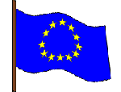
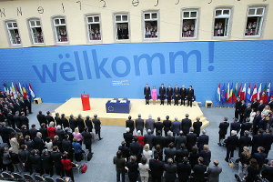

Tentative de unificare a națiunilor europene au existat încă dinaintea apariției statelor naționale moderne. Acum trei mii de ani, Europa era dominată de celți, iar mai târziu a fost cucerită și condusă de Imperiul Roman, centrat în Mediterană. Aceste uniuni timpurii au fost create cu forța. Imperiul Franc al lui Carol cel Mare și Sfântul Imperiu Roman au unit zone întinse sub o singură administrație pentru sute de ani. Uniunea vamală a lui Napoleon și mai recentele cuceriri ale Germaniei naziste din anii 1940 au avut doar o existență tranzitorie.
Înainte de a deveni un adevărat obiectiv politic, ideea unificării Europei nu era decât un vis al filozofilor şi vizionarilor. Victor Hugo, de exemplu, a avansat ideea „Statelor Unite ale Europei”, fiind inspirat de idealurile umaniste. Visul acesta a fost însă spulberat de groaznicele războaie care au devastat continentul în prima jumătate a secolului XX.
O nouă formă de speranţă a luat însă naştere din ruinele celui de-al doilea război mondial. Cei care au opus rezistenţă totalitarismului în timpul celui de-al doilea război mondial erau hotărâţi să pună capăt antagonismului internaţional şi rivalităţilor în Europa şi şi astfel să creeze condiţiile necesare unei păci durabile. Între 1945 şi 1950, câţiva oameni de stat, precum Robert Schuman, Konrad Adenauer, Alcide de Gasperi şi Winston Churchill, s-au hotărât să convingă cetăţenii de necesitatea intrării într-o eră nouă, cea a unei organizări structurate a Europei Occidentale, bazată pe interese comune şi fondate pe tratate, care ar garanta statul de drept şi egalitatea între toate ţările membre.
Preluând o idee mai veche a lui Jean Monnet, Robert Schuman (ministru de Externe al Franţei) propune, la 9 mai 1950, instituirea Comunităţii Europene a Cărbunelui şi Oţelului (CECO). Astfel, ţările care odinioară se confruntau pe câmpul de luptă decid să plaseze producţia de cărbune şi oţel sub responsabilitatea unei autorităţi supreme comune. Din punct de vedere practic, dar şi simbolic, spectrul conflictelor a fost transformat într-un instrument al păcii şi reconcilierii.
Dată fiind diversitatea lingvistică și culturală a Europei, aceste încercări au implicat, de obicei, ocupația militară a națiunilor, conducând la instabilitate; unele încercări, însă, au durat mii de ani și au fost însoțite de progrese economice și tehnologice, așa cum s-a întâmplat cu Imperiul Roman în timpul așa-numitei Pax Romana. Una dintre primele propuneri pentru o unificare pașnică prin cooperare și egalitatea statutului de membru a fost făcută de Victor Hugo în 1851. În urma catastrofelor provocate de Primul și Al Doilea Război Mondial, necesitatea formării unei (ce a devenit mai târziu) Uniuni Europene a crescut, din cauza voinței de a reconstrui Europa și de a elimina posibilitatea unui nou război. Acest sentiment a dus, în cele din urmă, la formarea Comunității Europene a Cărbunelui și Oțelului de către Germania (de vest), Franța, Italia și țările din Benelux. Acest lucru a fost posibil prin semnarea, în aprilie 1951, a Tratatului de la Paris, care a intrat în vigoare în iulie 1952.

Prima uniune vamală totală, denumită inițial drept Comunitatea Economică Europeană (informal chiar și Piața Comună), a fost creată prin Tratatul de la Roma, în 1957, și implementată la 1 ianuarie 1958. Aceasta din urmă s-a transformat în Comunitatea Europeană, care este, în prezent, "primul pilon" al Uniunii Europene. UE a evoluat dintr-un organ comercial într-un parteneriat economic și politic. Definitivarea Uniunii Europene s-a făcut prin ratificarea de către ansamblul țărilor membre ale Comunității Europene a Tratatului de la Maastricht (Olanda), pe 7 februarie 1993. Ca președinte al Convenției pentru Viitorul Europei, fostul președinte francez Valéry Giscard d'Estaing a propus schimbarea numelui Uniunii Europene în Europa Unită, dar această moțiune nu a fost aprobată.